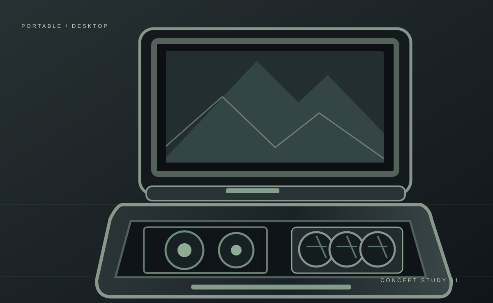

Internal layout
The motherboard, graphics card, power supply and cooling need space inside the limited footprint of the lower case. Mounting brackets and component positioning are central to the design.
A full desktop computer built inside a rugged portable case, with a 24-inch screen integrated into the lid — made so I could take my computer to other locations instead of being tied to one desk.

I wanted to be able to move my main computer between locations without having to transport and reconnect an entire conventional desktop setup. Instead of replacing it with a laptop, I designed a way to carry desktop hardware and a monitor together as one transportable system.
The rugged case protects and supports the hardware during transport. When opened, the lid becomes the display mount, while the lower compartment houses the desktop components. A keyboard and mouse connect when the machine is in use.
Intel desktop CPU
AMD Radeon discrete GPU
Desktop power supply
Monitor integrated into the lid
The motherboard, graphics card, power supply and cooling need space inside the limited footprint of the lower case. Mounting brackets and component positioning are central to the design.
A 24-inch display is mounted into the upper half so the system opens into a usable desktop workstation, reducing the number of separate items to transport.
Desktop components produce heat and need airflow. Fan positioning, wiring, power connections and access to peripherals all matter when packaging the hardware into a confined enclosure.